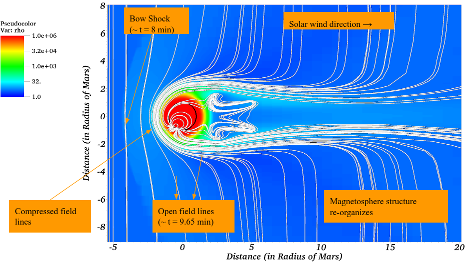
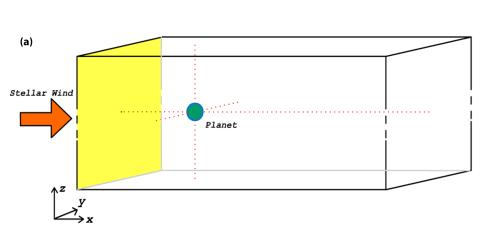
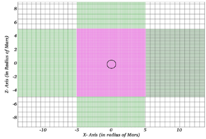
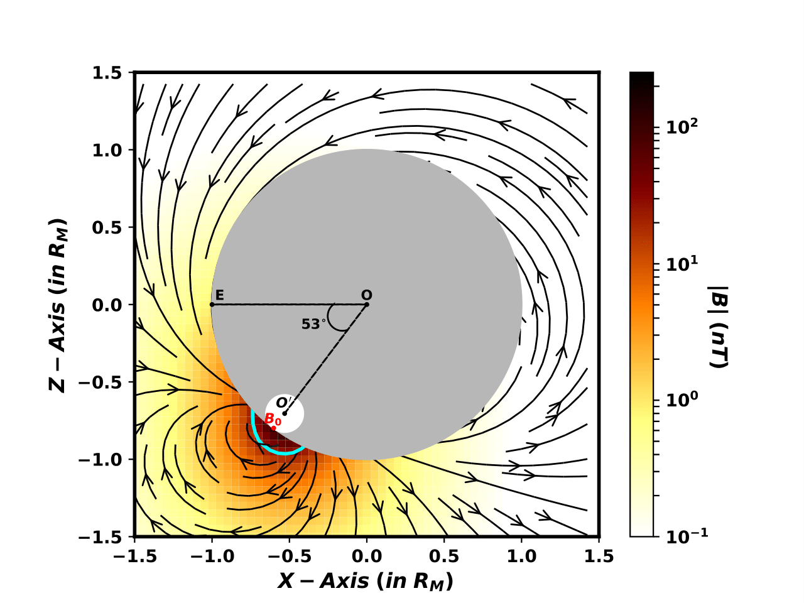
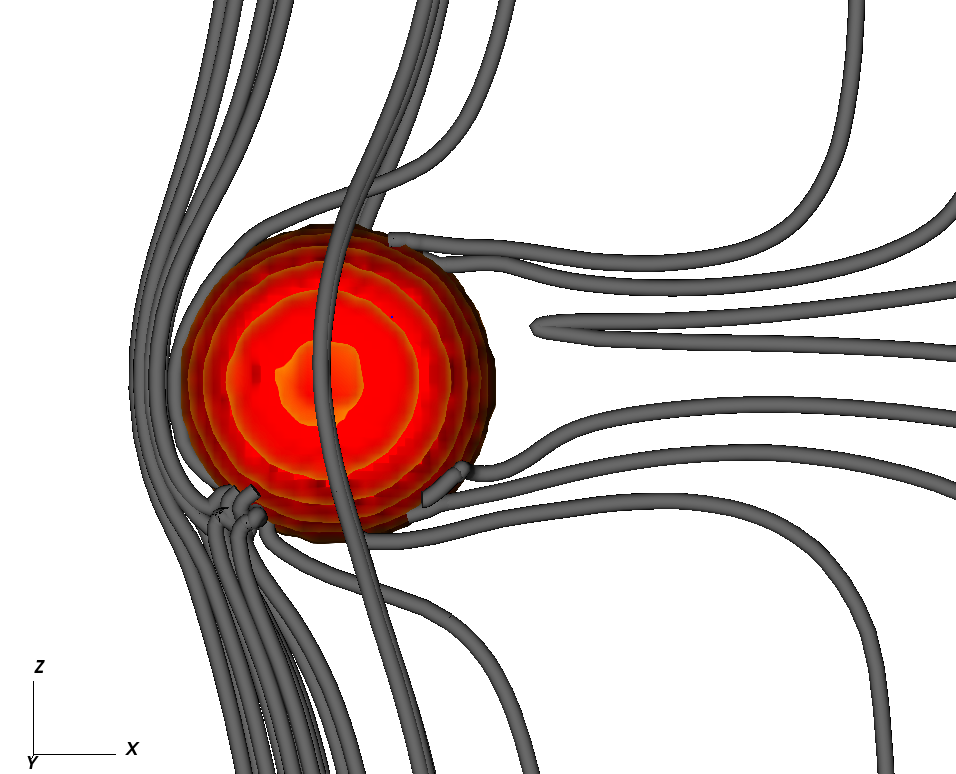
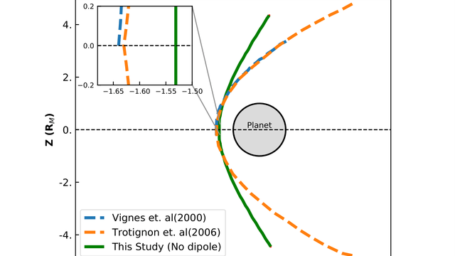
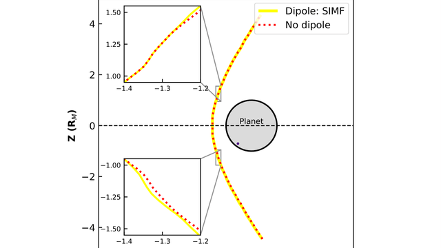
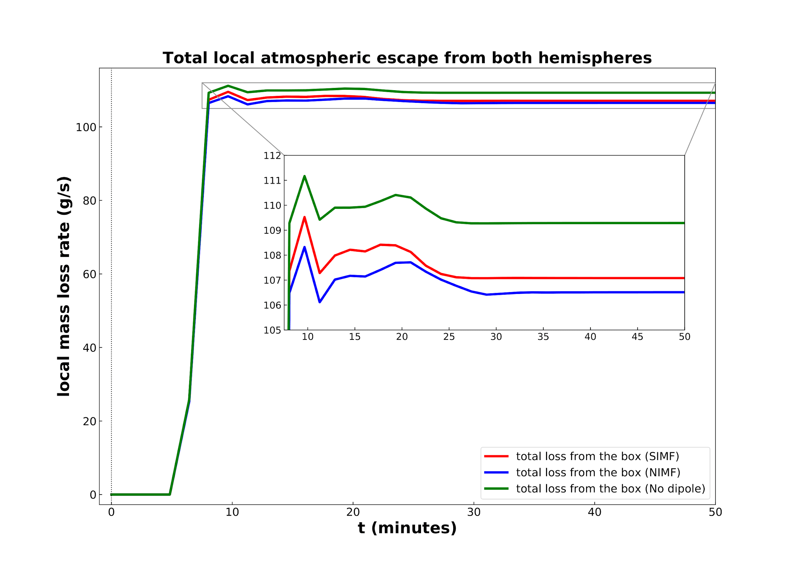

<div id="ajax-page" class="ajax-page-content">
  <div class="ajax-page-wrapper">
    <div class="ajax-page-nav">
      <div class="nav-item ajax-page-prev-next">
        <a class="ajax-page-load" href="#"><i class="lnr lnr-chevron-left"></i></a>
        <a class="ajax-page-load" href="#"><i class="lnr lnr-chevron-right"></i></a>
      </div>
      <div class="nav-item ajax-page-close-button">
        <a id="ajax-page-close-button" href="#"><i class="lnr lnr-cross"></i></a>
      </div>
    </div>

    <div class="ajax-page-title">
      <h1>Solar wind interaction with a planetary off-center mini-magnetosphere: A case study for Mars</h1>
    </div>

    <div class="row">
      <div class="col-sm-12 col-md-12 portfolio-block">

        <!-- HERO FIGURE -->
        <div style="text-align: center; margin-bottom: 30px;">
          
        </div>

        <p style="text-align: center; margin: 20px 0 30px; line-height: 2.0;">
          This thesis asks a simple but nontrivial question: when magnetization is localized and asymmetric, does it help a planet retain
          its atmosphere, or can it open pathways that make loss easier?
        </p>

        <hr style="border: none; border-top: 1px solid #eee; margin: 35px 0;">

        <h3 style="margin-bottom: 20px;">Introduction</h3>

        <p style="text-align: justify; line-height: 1.8; margin-bottom: 18px;">
          A long-standing idea in planetary habitability is that a global magnetic field acts as a protective shield, limiting atmospheric
          erosion by deflecting stellar-wind plasma <span class="cite-bracket">[</span><a class="cite" href="#ref-1">1</a><span class="cite-bracket">,</span><a class="cite" href="#ref-2">2</a><span class="cite-bracket">]</span>. 
          At the same time, recent work has challenged this “magnetic umbrella” picture by arguing
          that magnetized planets can also open pathways for energy and momentum transfer into the upper atmosphere, potentially enhancing loss
          under some conditions <span class="cite-bracket">[</span><a class="cite" href="#ref-3">3</a><span class="cite-bracket">,</span><a class="cite" href="#ref-4">4</a><span class="cite-bracket">,</span><a class="cite" href="#ref-5">5</a><span class="cite-bracket">]</span>. 
          This tension matters for exoplanets: if magnetization systematically helps or hurts atmospheric retention,
          it changes how we interpret which planets can plausibly maintain long-lived atmospheres and, by extension, meet one of the necessary ingredients for habitability.
        </p>

        <p style="text-align: justify; line-height: 1.8; margin-bottom: 18px;">
          To isolate the role of localized magnetization, we use Mars as a motivating case study: its localized crustal fields, weaker gravity, and nominal solar-wind 
          conditions provide a unique natural laboratory to examine how magnetization alone reshapes the interaction and modulates the inferred planetary mass-flux proxy in 
          our simulations. We compare three cases: a baseline with no dipole, and two “mini-magnetosphere” cases where the interplanetary magnetic field (IMF) is purely along the 
          \(z\)-direction and oriented either southward or northward relative to the dipole axis, i.e. \((0,0,-1)\) or \((0,0,1)\).
        </p>

        <hr style="border: none; border-top: 1px solid #eee; margin: 35px 0;">

        <h3 style="margin-bottom: 20px;">Computational setup</h3>

        <p style="text-align: justify; line-height: 1.8; margin-bottom: 18px;">
          We use the open-source <a href="https://plutocode.ph.unito.it/" target="_blank" style="text-decoration: none; color: #8b7355;">
         <b>PLUTO</b>
        </a> framework to evolve the three-dimensional compressible, resistive, magnetohydrodynamics (MHD) equations for a star-planet
          interaction problem. The solver advances conservation laws for mass, momentum, and total energy, together with the magnetic induction
          equation including magnetic diffusivity.
        </p>

        <!-- MHD EQUATIONS (MathJax) -->
        <!--
        <p style="text-align: center; font-size: 1.05em; line-height: 2.6; margin: 20px 0;" class="mathjax-equation">
          \[
          \frac{\partial \rho}{\partial t} + \nabla\cdot(\rho\mathbf{v})=0
          \]
          \[
          \frac{\partial (\rho\mathbf{v})}{\partial t}+\nabla\cdot\left[\rho\mathbf{v}\mathbf{v}+\left(p+\frac{B^2}{2\mu_0}\right)\mathbf{I}-\frac{\mathbf{B}\mathbf{B}}{\mu_0}\right]=0
          \]
          \[
          \frac{\partial E}{\partial t}+\nabla\cdot\left[\left(E+p+\frac{B^2}{2\mu_0}\right)\mathbf{v}-\frac{(\mathbf{v}\cdot\mathbf{B})\mathbf{B}}{\mu_0}\right]=0
          \]
          \[
          \frac{\partial \mathbf{B}}{\partial t}=\nabla\times(\mathbf{v}\times\mathbf{B})-\nabla\times(\eta\nabla\times\mathbf{B})
          \]
        </p>
      -->

        <p style="text-align: justify; line-height: 1.8; margin-bottom: 18px;">
          The plasma is treated with an adiabatic equation of state with polytropic index \(\gamma=5/3\), and we include a uniform magnetic diffusivity \(\eta=\times10^{9}\,\mathrm{m^2\,s^{-1}}\) motivated
          from <a class="cite" href="#ref-6">[6]</a> study. 
        </p>

        <!-- SETUP FIGURES (side-by-side, compact) -->
        <div style="display: flex; gap: 14px; justify-content: center; align-items: flex-start; flex-wrap: wrap; margin: 16px 0 8px;">

          <div style="flex: 0 1 40%; max-width: 360px; text-align: center;">
            
            <p style="margin: 8px 0 0; color: #666; font-size: 0.9em; line-height: 1.4;">
              Computational domain and boundary injection
            </p>
          </div>

          <div style="flex: 0 1 60%; max-width: 520px; display: flex; justify-content: center;">
            <div style="width: 75%; text-align: center;">
              
              <p style="margin: 8px 0 0; color: #666; font-size: 0.9em; line-height: 1.4;">
                Non-uniform mesh and refinement (colors) near the planet
              </p>
            </div>
          </div>

        </div>


        <p style="text-align: justify; line-height: 1.8; margin: 0px 0;">
          The simulations are performed in a planet-fixed Cartesian coordinate system with the planet centered at \((0,0,0)\). The \(x\)-axis
          points from the planet against the pristine upstream stellar-wind flow, the \(z\)-axis points from the north magnetic pole toward the
          south magnetic pole (zero tilt by definition here), and the \(y\)-axis completes a right-handed system.
        </p>

        <p style="text-align: center; font-size: 1.02em; line-height: 2.2; margin: 0px 0;" class="mathjax-equation">
          \[
          x\in[-25R_M,\,100R_M],\quad y\in[-25R_M,\,25R_M],\quad z\in[-100R_M,\,100R_M],
          \qquad R_M=3389.5\,\mathrm{km}
          \]
        </p>

        <p style="text-align: justify; line-height: 1.8; margin-bottom: 0px;">
          The base mesh uses \([N_x,N_y,N_z]=[317,234,400]\) with non-uniform refinement. The finest region \([-3R_M,3R_M]\) is resolved at
          \(0.05R_M\) (about \(169.5\,\mathrm{km}\)), with coarser resolution farther out. Upstream conditions are injected at the left boundary (the \(y\)-\(z\) plane). The wind velocity is \([270,0,0]\,\mathrm{km\,s^{-1}}\),
          the temperature is \(4\times10^4\,\mathrm{K}\), and the density is set to four times the ambient density. The IMF has strength \(4\,\mathrm{nT}\)
          and is initialized purely along \(z\), oriented northward or southward depending on the run.
        </p>

        <hr style="border: none; border-top: 1px solid #eee; margin: 35px 0;">

        <h3 style="margin-bottom: 20px;">Mini-magnetosphere implementation</h3>

        <p style="text-align: justify; line-height: 1.8; margin-bottom: 18px;">
          To mimic Mars’ highly inhomogeneous crustal magnetization, We introduce a localized, off-centered dipolar magnetic field in the southern
          hemisphere. This is motivated by observations and modeling showing that Mars’ strongest crustal sources are concentrated in the south,
          producing intense regional anomalies rather than a global dipole <a class="cite" href="#ref-7">[7]</a>. In the hybrid picture of the Mars-Sun interaction, strong crustal regions
          can generate localized closed-field structures and shift plasma boundaries, including magnetopause-like features above strong anomalies <a class="cite" href="#ref-8">[8]</a>.
        </p>

        <div style="display: flex; justify-content: center; margin: 14px 0 10px;">
        <div style="width: 520px; max-width: 92%; text-align: center;">
          
          <p style="margin: 6px 0 0; color: #666; font-size: 0.9em; line-height: 1.45;">
            XZ-sliced pseudocolor plot of the intrinsic magnetic field showing the off-centered southern-hemisphere dipole (\(O'\)).
          </p>
        </div>
      </div>

        <p style="text-align: justify; line-height: 1.8; margin-bottom: 18px;">
          Concretely, the dipole is buried beneath the surface and offset to represent a southern-hemisphere anomaly. The goal is a minimal, tunable
          magnetic configuration that captures the key geometric consequence of crustal fields: a strong, localized magnetization, while keeping the
          system interpretable for controlled comparisons across IMF orientations. The above figure shows the initial magnetic field configuration.
        </p>
        
        <hr style="border: none; border-top: 1px solid #eee; margin: 35px 0;">

        <h3 style="margin: 0 0 14px 0; text-align: left;">Numerical simulations in action</h3>

        <!-- SIMULATION ANIMATION 
        <div style="display: flex; justify-content: center; margin: 10px 0 6px;">
          <div style="width: 720px; max-width: 96%; text-align: center;">
            
            <p style="margin: 6px 0 0; color: #666; font-size: 0.88em; line-height: 1.4;">
              Time evolution of the interaction in the noon–midnight slice where pseudocolors show the current density.
            </p>
          </div>
        </div>
      -->
        <div style="display: flex; justify-content: center; margin: 10px 0 6px;">
          <div style="width: 720px; max-width: 96%; text-align: center;">
            <video controls preload="metadata" playsinline 
                  style="width: 100%; height: auto; border-radius: 8px; box-shadow: 0 4px 18px rgba(0,0,0,0.18); background: #000;">
              <source src="img/portfolio/mars/mars_sim_fast.mp4" type="video/mp4">
              Your browser does not support the video tag.
            </video>
            
            <p style="margin: 6px 0 0; color: #666; font-size: 0.88em; line-height: 1.4;">
              Time evolution of the interaction in the noon–midnight slice where pseudocolors show the current density.
            </p>
          </div>
        </div>


        <p style="text-align: justify; line-height: 1.75; margin: 8px 0 14px;">
          To make the simulation less abstract, the animation above shows how the magnetic structure evolve and current sheets from the initial condition
          toward a quasi-steady interaction. Even in a single-fluid resistive-MHD model, you can see the bow-shock formation, field-line draping,
          and the way the localized southern anomaly reshapes the near-planet topology.
        </p>

        <hr style="border: none; border-top: 1px solid #eee; margin: 35px 0;">
        
        <h3 style="margin: 0 0 18px 0; text-align: left;">Results</h3>

        <!-- RESULTS FIGURE: TOPOLOGY -->
        <div style="display: flex; justify-content: center; margin: 26px 0 10px;">
        <div style="width: 520px; max-width: 92%; text-align: center;">
          
          <p style="margin: 6px 0 0; color: #666; font-size: 0.9em; line-height: 1.45;">
            Magnetic streamlines for the S-IMF case showing dayside reconnection (intertwisted bundles), draped field lines, and the magnetotail (U-shaped region) around a modeled Mars (red sphere).
          </p>
        </div>
      </div>


        <p style="text-align: justify; line-height: 1.8; margin: 18px 0;">
          Across the magnetized runs, a hybrid magnetic topology develops (above figure): solar-wind field lines drape around the planet and interact with the
          localized closed-field region associated with the mini-magnetosphere due to magnetic reconnection. In regions of strong shear and current density, the simulations show
          topological reconfiguration and weakening of magnetic structures in the wake.
        </p>

        <!-- RESULTS FIGURE: BOUNDARIES -->
        <!-- RESULTS FIGURE: BOUNDARIES (two-panel) -->
        <div style="display: flex; justify-content: center; gap: 14px; flex-wrap: wrap; margin: 22px 0 10px;">

          <div style="flex: 0 1 48%; max-width: 420px; text-align: center;">
            
            <p style="margin: 6px 0 0; color: #666; font-size: 0.88em; line-height: 1.4;">
              No-dipole study bow shock compared against <span class="cite-bracket">[</span><a class="cite" href="#ref-9">9</a><span class="cite-bracket">,</span><a class="cite" href="#ref-10">10</a><span class="cite-bracket">]</span> in the noon–midnight plane.
            </p>
          </div>

          <div style="flex: 0 1 48%; max-width: 420px; text-align: center;">
            
            <p style="margin: 6px 0 0; color: #666; font-size: 0.88em; line-height: 1.4;">
              Bow shock: S-IMF dipole vs. no dipole, with zoomed insets for southern and northern hemispheres.
            </p>
          </div>

        </div>


        <p style="text-align: justify; line-height: 1.8; margin: 18px 0;">
          Next, we investigated the effects of the dipolar field on the structure and location of plasma boundaries. Bow shock formed at a distance of roughly \(-1.52 R_M\), similar to <span class="cite-bracket">[</span><a class="cite" href="#ref-1">1</a><span class="cite-bracket">,</span><a class="cite" href="#ref-2">2</a><span class="cite-bracket">]</span>, 
          and displayed asymmetry (right panel in above figure) when mini-magnetosphere was introduced. However, the value was not significant. No magnetopuase boundary formed in our simulations, but the subsolar location of a similar region is estimated by identifying the respective signatures.  
          The simulations exhibit the formation of a mini-magnetopause in the southern hemisphere. Besides, we observed the marsward displacement of this boundary during the periods of S-IMF.

        </p>

        <!-- RESULTS FIGURE: MASS FLUX -->
        <div style="display: flex; justify-content: center; margin: 26px 0 10px;">
        <div style="width: 520px; max-width: 92%; text-align: center;">
          
          <p style="margin: 6px 0 0; color: #666; font-size: 0.9em; line-height: 1.45;">
            Temporal evolution of atmospheric mass-loss rates for S-IMF (red), N-IMF (blue), and ND (green) cases, calculated within a central \(8^3 R_M\)​ cubic domain.
          </p>
        </div>
      </div>

        <p style="text-align: justify; line-height: 1.8; margin: 18px 0;">
          Finally, we compared the atmospheric escape in no dople case against mini-magnetosphere when the IMF is directed in southern and northern directions. The above figure shows that the loss is maximum in the no-dipole case, favoring the role of mini-magnetosphere in the protection of the atmosphere. 
          We also find that the higher atmospheric escape is happening in S-IMF direction relative to N-IMF, probably because the magnetic reconnection is favored in southward-directed IMF, which ushers the erosion of mini-magnetopause.
        </p>

        <hr style="border: none; border-top: 1px solid #eee; margin: 35px 0;">

        <h3 style="margin-bottom: 20px;">Discussion and conclusion</h3>

        <p style="text-align: justify; line-height: 1.8; margin-bottom: 18px;">
          Overall, introducing a localized southern-hemisphere mini-magnetosphere changes the near-planet magnetic geometry and modestly alters the
          redistribution of flow and magnetic stresses in the interaction region. The magnetized runs show a more structured obstacle for the incident
          wind and a localized magnetopause-like shielding region above the anomaly, while the unmagnetized run more closely resembles a purely induced,
          draped-field interaction. These differences align with the broader hybrid magnetosphere picture motivated by strong crustal magnetic regions on Mars.
        </p>

        <p style="text-align: justify; line-height: 1.8; margin-bottom: 18px;">
          Atmospheric loss diagnostics must be interpreted carefully. The reported “escape” is best viewed as a localized planetary-plasma mass-flux proxy
          estimated within a single-fluid MHD model using tracers, not as a direct measurement of true ion outflow escape. The model does not include
          multi-species chemistry, kinetic escape physics, or the microphysical dissipation required to interpret field-line breaking as physical reconnection.
          Within this controlled framework, I find that a localized southern anomaly can act as a partial shield that reorganizes the interaction geometry
          and can modestly suppress the inferred local mass-flux proxy relative to the unmagnetized case, with sensitivity to IMF orientation.
        </p>

        <p style="text-align: justify; line-height: 1.8; margin-bottom: 0;">
          The broader lesson is the one I care about: magnetization is not universally protective or universally harmful. The outcome depends on geometry,
          upstream forcing, and how dissipation in the modeled system regulates pathways for energy and momentum transfer into the upper atmosphere.
        </p>

        <hr style="border: none; border-top: 1px solid #eee; margin: 35px 0;">

        <h3 style="margin-bottom: 20px;">References</h3>

        <div class="csl-bib-body">
          <div id="ref-1" class="csl-entry">Huang, S.-S. (1960). LIFE-SUPPORTING REGIONS IN THE VICINITY OF BINARY SYSTEMS. 
            <i>Publications of the Astronomical Society of the Pacific</i>, <i>72</i>(425), 106–114. 
            <a class="ref-link" href="http://www.jstor.org/stable/40673644" target="_blank" rel="noopener">
              http://www.jstor.org/stable/40673644
            </a>
          </div>

          <div id ="ref-2" class="csl-entry">Guedel, M., Dvorak, R. et. al (2014). 
            <i>Astrophysical Conditions for Planetary Habitability</i>. 
            <a class="ref-link" href="https://doi.org/10.2458/azu_uapress_9780816531240-ch038" target="_blank" rel="noopener">
              https://doi.org/10.2458/azu_uapress_9780816531240-ch038
            </a>
          </div>

          <div id ="ref-3" class="csl-entry">Egan, H., Jarvinen, R., Ma, Y., &#38; Brain, D. (2019). Planetary magnetic field control of ion escape from weakly magnetized planets. 
            <i>Monthly Notices of the Royal Astronomical Society</i>, <i>488</i>(2), 2108–2120. 
            <a class="ref-link" href="https://doi.org/10.1093/mnras/stz1819" target="_blank" rel="noopener"> 
              https://doi.org/10.1093/mnras/stz1819
            </a>
          </div>

          <div id ="ref-4" class="csl-entry">Gunell, H., Maggiolo, R. et. al (2018). 
            Why an intrinsic magnetic field does not protect a planet against atmospheric escape. <i>A&#38;A</i>, <i>614</i>, L3. 
            <a class="ref-link" href="https://doi.org/10.1051/0004-6361/201832934" target="_blank" rel="noopener"> 
              https://doi.org/10.1051/0004-6361/201832934
            </a>
          </div>

          <div id ="ref-5" class="csl-entry">Sakata, R., Seki, K. et. al (2020). 
            Effects of an Intrinsic Magnetic Field on Ion Loss From Ancient Mars Based on Multispecies MHD Simulations. <i>Journal of Geophysical Research: Space Physics</i>,
             <i>125</i>
             <a class="ref-link" href="https://doi.org/10.1029/2019JA026945" target="_blank" rel="noopener"> 
              https://doi.org/10.1029/2019JA026945
            </a>
          </div>

          <div id = "ref-6" class="csl-entry">Das, S. B., Basak, A., Nandy, D., &#38; Vaidya, B. (2019). Modeling Star–Planet Interactions in Far-out Planetary and Exoplanetary Systems. 
            <i>The Astrophysical Journal</i>, <i>877</i>(2), 80. 
            <a class="ref-link" href="https://doi.org/10.3847/1538-4357/ab18ad" target="_blank" rel="noopener"> 
              https://doi.org/10.3847/1538-4357/ab18ad
            </a>
          </div>

          <div id ="ref-7" class="csl-entry">Acuña, M. H., Connerney, J. E. P. et. al (1999). 
            Global Distribution of Crustal Magnetization Discovered by the Mars Global Surveyor MAG/ER Experiment. <i>Science</i>, <i>284</i>(5415), 790–793.
             <a class="ref-link" href="https://doi.org/10.1126/science.284.5415.790"  target="_blank" rel="noopener"> 
              https://doi.org/10.1126/science.284.5415.790
            </a>
          </div>

          <div id = "ref-8" class="csl-entry">Brain, D. A., Bagenal, F., Acuña, M. H., &#38; Connerney, J. E. P. (2003). Martian magnetic morphology: Contributions from the solar wind and crust.
             <i>Journal of Geophysical Research: Space Physics</i>, <i>108</i>(A12). 
             <a class = "ref-link" href="https://doi.org/10.1029/2002JA009482" target="_blank" rel="noopener"> 
              https://doi.org/10.1029/2002JA009482
            </a>
          </div>

          <div id = "ref-9" class="csl-entry">Vignes, D., Mazelle, C. et. al (2000). The solar wind interaction with Mars: Locations and shapes of the bow shock and the magnetic pile-up boundary from the observations of the MAG/ER Experiment onboard Mars Global Surveyor. 
            <i>Geophysical Research Letters</i>, <i>27</i>(1), 49–52. 
            <a class="ref-link" href="https://doi.org/10.1029/1999GL010703"  target="_blank" rel="noopener"> 
              https://doi.org/10.1029/1999GL010703
            </a>
          </div>

          <div id = "ref-10" class="csl-entry">Trotignon, J. G., Mazelle, C. et. al (2006). Martian shock and magnetic pile-up boundary positions and shapes determined from the Phobos 2 and Mars Global Surveyor data sets. 
            <i>Planetary and Space Science</i>, <i>54</i>(4), 357–369. <a href="https://doi.org/10.1016/j.pss.2006.01.003" target="_blank" rel="noopener"> 
              https://doi.org/10.1016/j.pss.2006.01.003
            </a>
          </div>


        </div>

        <hr style="border: none; border-top: 1px solid #eee; margin: 35px 0;">

        <h3 style="margin-bottom: 20px;">Project Details</h3>

        <p style="line-height: 1.8; margin-bottom: 12px;">
          <span style="color: #666;">Author:</span> Sajal Gupta
        </p>
        <p style="line-height: 1.8; margin-bottom: 12px;">
          <span style="color: #666;">Contributors:</span> Dibyendu Nandy, Arnab Basak
        </p>
        <p style="line-height: 1.8; margin-bottom: 12px;">
                    <span style="color: #666;">Year:</span> 2019-2020
        </p>
        <p style="line-height: 1.8; margin-bottom: 12px;">
          <span style="color: #666;">Method:</span> 3D resistive MHD (PLUTO), controlled comparisons across IMF orientations
        </p>
        <p style="line-height: 1.8; margin-bottom: 25px;">
          <span style="color: #666;">Keywords:</span> Mars, crustal magnetic fields, mini-magnetosphere, bow shock, draping, mass-flux proxy
        </p>

        <div style="margin-top: 30px;">
          <!-- Replace the link later with your GitHub thesis repo -->
          <a href="https://github.com/sajalgupta0422/Solar-wind-interaction-with-a-planetary-off-center-mini-magnetosphere-A-case-study-for-Mars/" target="_blank"
             style="display: inline-block; padding: 12px 28px; background: #8b7355; color: white; text-decoration: none; border-radius: 4px; font-size: 0.95em;">
            <i class="fab fa-github"></i> &nbsp;Read my Thesis on GitHub
          </a>
        </div>

      </div>
    </div>
  </div>
</div>
